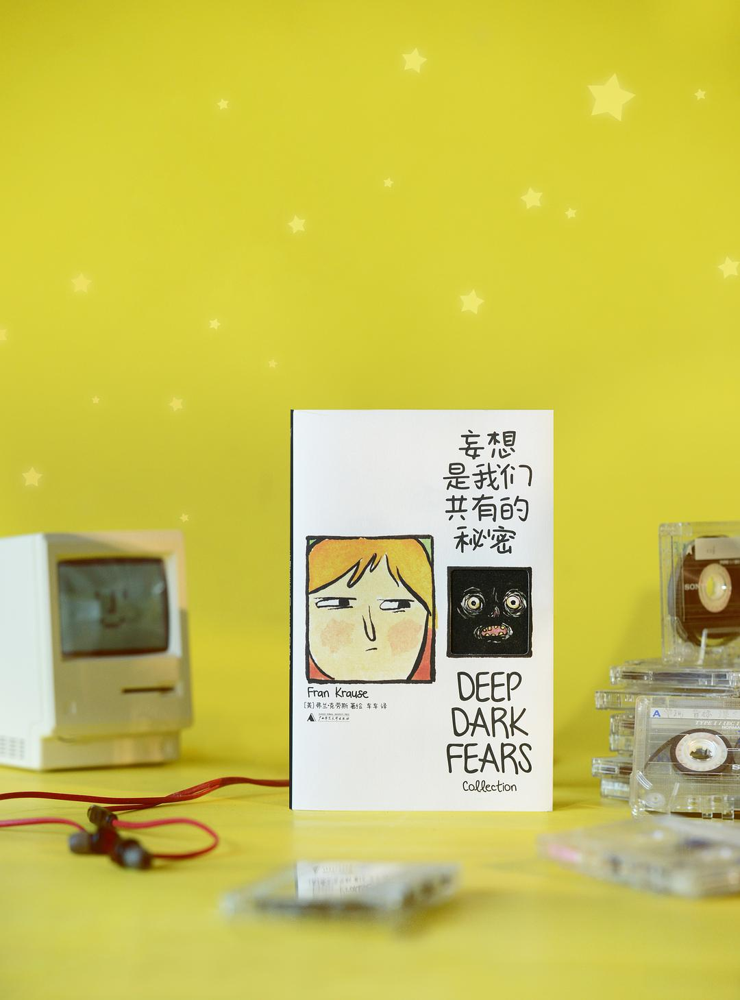
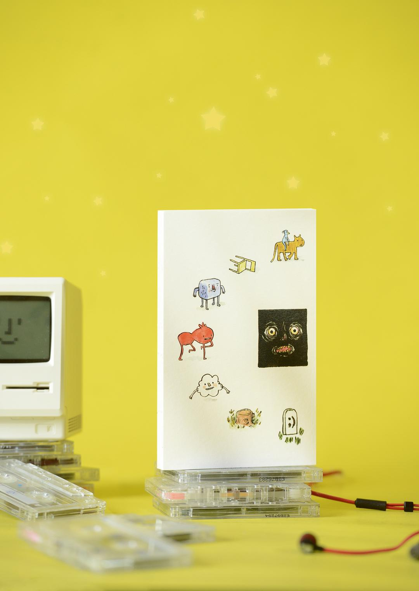
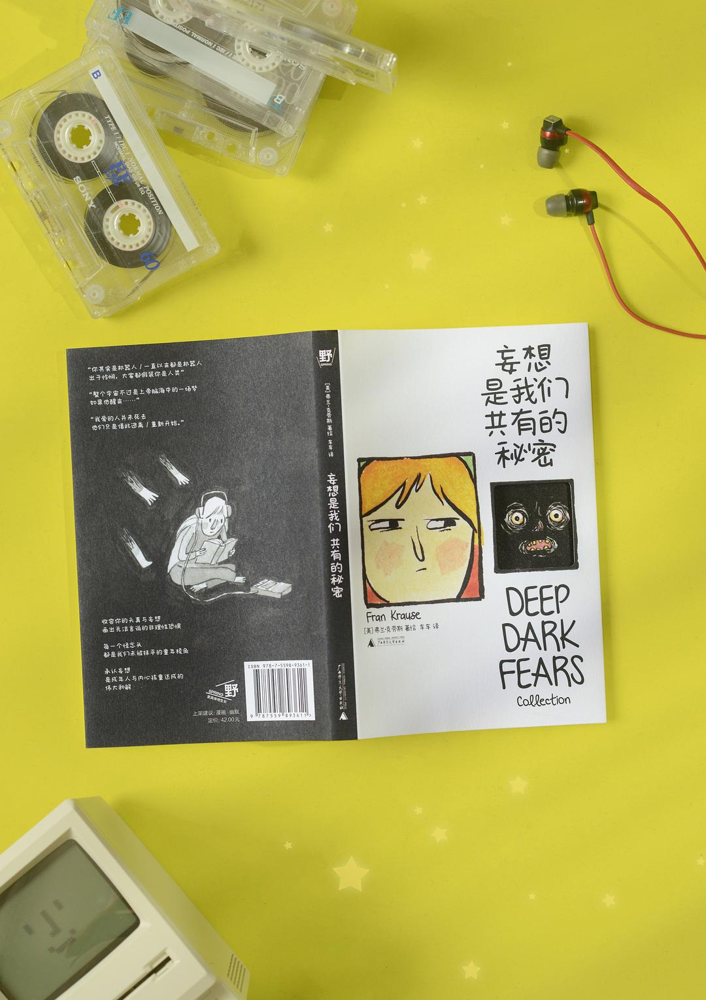
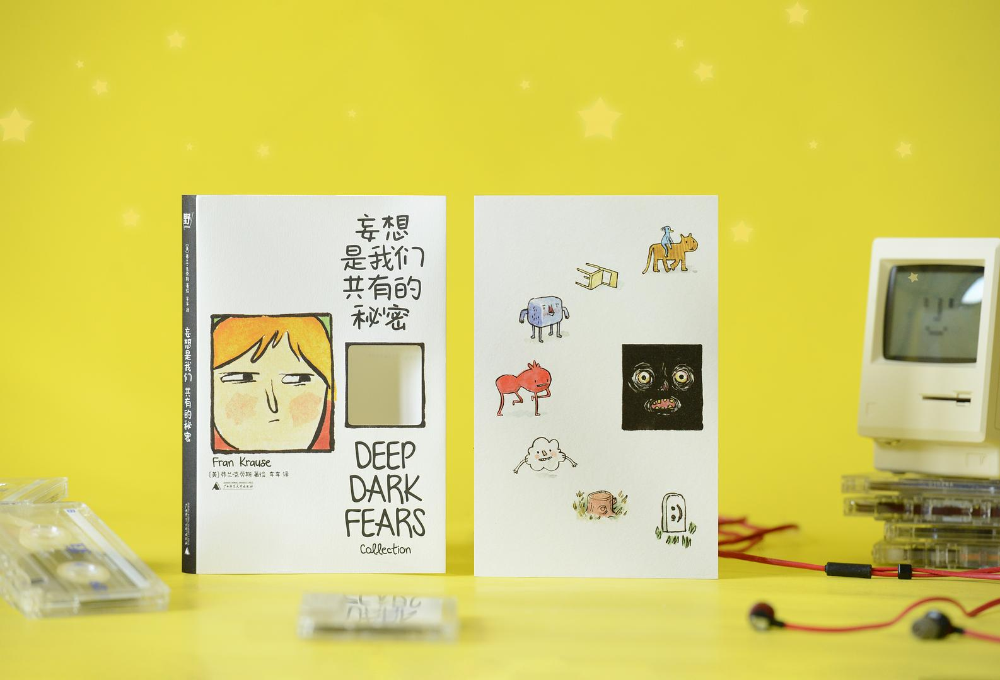
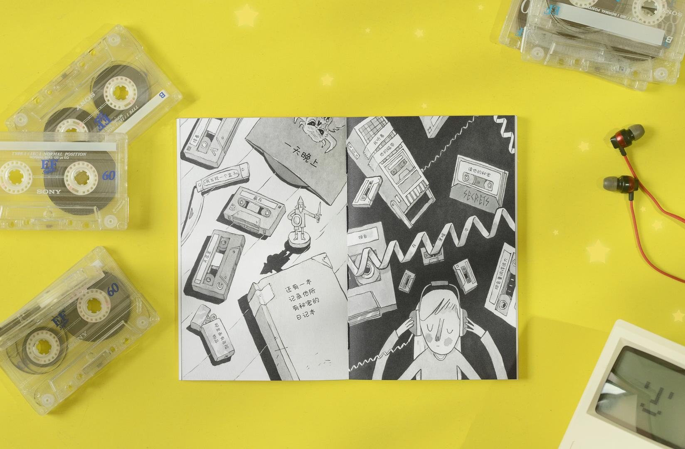
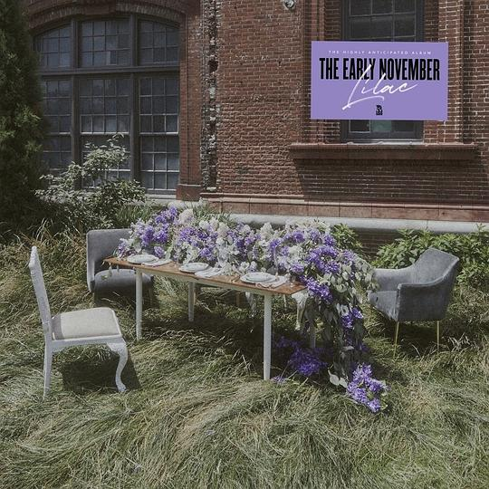
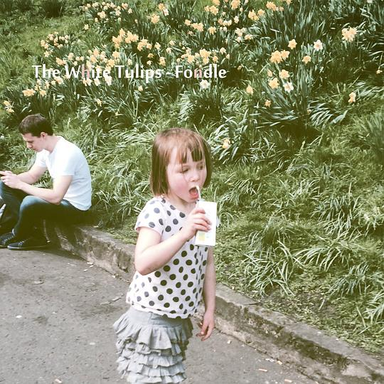
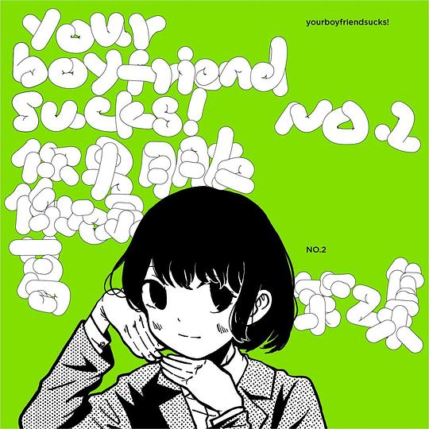
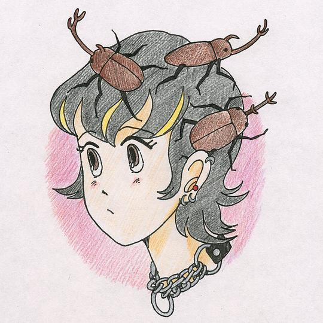

2026年4月
广播发布后不可编辑，所以每条都是那一刻的原话。
2026-04-27 19:25:14
 看过 上伊那牡丹，醉姿如百合 / 上伊那ぼたん、酔へる姿は百合の花 ★★★★☆
看过 上伊那牡丹，醉姿如百合 / 上伊那ぼたん、酔へる姿は百合の花 ★★★★☆
摄影太恐怖，连人物入镜时焦点从背景上的转换都很自然。配乐蛮好听的。社长的声音总让我幻视onimai。op的演出太精彩，深居我心了。上大学开始学抽烟喝酒，也是很有前途了。
2026-04-27 18:12:10
 读过 下垂眼 ★★★★★
读过 下垂眼 ★★★★★
四格与日记的搭配使经典的故事看上去更新颖有趣了。真是颇有早期互联网的单纯的遗风。
2026-04-27 10:45:33
在读 下垂眼 ★★★★★
四格与日记的搭配使经典的故事看上去更新颖有趣了。
2026-04-26 23:25:33
看过 零点零一公分的距离 / 零點零一公分的距離 ★★★★☆
张震与张国荣跨越二十年的重逢教人动容，没想到还有胎死腹中的《北京之夏》的事情。以“蛋”为主题做的短片的确很契合，剪辑手法很值得学习。
2026-04-26 16:43:28
 看过 恋恋笔记本 / The Notebook ★★★★☆
看过 恋恋笔记本 / The Notebook ★★★★☆
真是老派的跨越阶级的爱情故事，但对配角的棉花之子来说颇有些过于残忍了。高司令痞帅痞帅的，虽然女主没把握好约定的重要性，但最后两位老人的厮守蛮令人触动的。胶片摄影挺好看的。
2026-04-25 15:27:24
 看过 世界的主人 / 세계의 주인 ★★★★★
看过 世界的主人 / 세계의 주인 ★★★★★
镜头用得太克制，配乐也是如此。在洗车间的呐喊里我见到了属于导演的天才时刻，只是有段母亲在车内与朋友视频通话独饮时手机突然没电了直照着母亲脸庞有点稍显刻意。体育课的老师也太双标了吧，为什么第一次珠恩勒住男同学的脖子时老师不喊停呢。上诉的那段检方的问询有些过于离谱了，这么看我国目前的“非亲历不可知细节”到最后也会像韩方一样难以举证了。故事真的挺精巧的，尤其最后是不同人声念出的纸条。好喜欢默默守护姐姐的小孩哥，只是他知不知道大扫除时候他有一只袜子给弄到洗衣机后面了。_(¦3」∠)_。
2026-04-24 17:00:05
 读过 我本芬芳 ★★★☆☆
读过 我本芬芳 ★★★☆☆
本来《秋园》还是暗戳戳地讲女性苦难叙事，到这一本就直接不装了，明晃晃地摆明了。不喜欢对地名使用字母替代的行为。心里想着结婚不该是这样却不去沟通整天胡思乱想。下放劳改又不是坏事一桩，也是自己选择了结婚这条道路。整篇矫揉造作。吕这个人我好像听说过，也似乎见识过。
2026-04-23 18:44:23
 在读 爱丽丝漫游奇境 ★★★★☆
在读 爱丽丝漫游奇境 ★★★★☆
导语讲得蛮好，主要是插画加大分。(o^^o)
2026-04-23 17:16:47
 读过 文学少女 03 ★★★★☆
读过 文学少女 03 ★★★★☆
首刷的第十页第七段的首行缩进居然只有一个全角空格！故事里有天然呆的学妹、傲娇的同班同学、想一出是一出的学姐，真是太好哦。我要看的就是纠缠不清的爱情啊！最终戏剧的蒙太奇写得太好，使人物心境的变化合理化了。没想到在美羽身上还有伏笔。大正浪漫同意是明黄色了，封面的学姐可爱捏。
2026-04-23 11:36:34
在读 文学少女 03 ★★★★☆
首刷的第十页第七段的首行缩进居然只有一个全角空格！故事里有天然呆的学妹、傲娇的同班同学、想一出是一出的学姐，真是太好哦。
2026-04-21 17:32:01
 读过 文学少女 02 ★★★★★
读过 文学少女 02 ★★★★★
注释倒是蛮用心的。流人似乎是个m属性啊otz。我要看的就是这样爱恨交织的狗血故事啊！真敬佩敢于写死角色的作者，使得本书与往常轻小说相比真有些不同了。
2026-04-20 13:56:57
在读 文学少女 02 ★★★★☆
注释倒是蛮用心的。
2026-04-19 23:49:11
 在读 这些人，那些事 ★★★★★
在读 这些人，那些事 ★★★★★
吴老师的文字真是随意有力啊。
2026-04-19 18:10:50
 看过 目中无人2 ★★★★☆
看过 目中无人2 ★★★★☆
比起第一部来说好不少，摄影也有了质感，很多空镜真真十分美丽。只是美术能考虑到色彩对于打斗的重要性就好了，毕竟每人都穿的是朴素的古装。最后的群像打戏不好看，甚至在对战泄了气，可惜。杨恩又演得真是好哦，拿捏得很传神。
2026-04-19 09:22:01
转发
恭喜呀。(o^^o)
    


2026-04-19 09:21:44
 想读 妄想是我们共有的秘密
想读 妄想是我们共有的秘密
车车。
2026-04-18 16:42:30
 看过 哥斯拉-1.0 / ゴジラ-1.0 ★★★☆☆
看过 哥斯拉-1.0 / ゴジラ-1.0 ★★★☆☆
只能说无功无过让我单纯过个视效的眼瘾，但是在虚拟的故事仍追求真实的历史是否有些难评了呢。没想到负片版不是简单的黑白反转。喜欢哥斯拉的蓝色光波。
2026-04-17 16:05:32
 读过 渴望死亡的小丑 ★★★★☆
读过 渴望死亡的小丑 ★★★★☆
开头真是超级虚假的幻想啊。没想到是严肃的犯罪小说，情节上蒙太奇用得太顺手了。眼花但是不乱。
2026-04-15 19:30:06
在玩 绿色地狱 Green Hell ★★★☆☆
和孙权一起玩的，他邀请的我。里面一些合成元素、收集的玩法都挺不错的，我只是受不了所谓的“捕猎”原住民。
2026-04-14 17:38:36
在读 渴望死亡的小丑 ★★★★☆
开头真是超级虚假的幻想啊。
2026-04-14 14:30:08
 看过 薄暮 ★★★☆☆
看过 薄暮 ★★★☆☆
开头的太阳光辉的演出证明了宽叔的实力尚存，但奈何资金单薄画面也太过单调，以至于正式的四重奏到最后用起了ppt。其中不太理解的是地震这般宏大叙事在这里对男女主身份强调的作用，难道是乡愁么？我实在看不出来。最不能理解的杀必死镜头，一点用处没有，福利也太明显了。另外就是角色的人设都太刻板了，没意思。最后的最后，女孩子们到底在臭什么啊。看见团长、阿虚和大明神了。
2026-04-13 21:48:48
 读过 回忆爱玛侬 ★★★★★
读过 回忆爱玛侬 ★★★★★
中信这次的印刷质量还真不错。分镜的透视功底太强了，很有摄影意识，有几个正反打没有越轴。重点是故事上，一讲徐徐道来的传奇，我便开始走心。emanon在苍穹一粟下的大跨页真是太漂亮了。真是充满故事的大姐姐哦。
2026-04-13 14:56:05
读过 我本芬芳 ★★★☆☆
本来《秋园》还是暗戳戳地讲女性苦恼叙事，到这一本就直接不装了，明晃晃地摆明了。不喜欢对地名使用字母替代的行为。心里想着结婚不该是这样却不去沟通整天胡思乱想。下放劳改又不是坏事一桩，也是自己选择了结婚这条道路。整篇矫揉造作。吕这个人我好像听说过，也似乎见识过。
2026-04-13 14:00:01
在读 回忆爱玛侬 ★★★★★
中信这次的印刷质量还真不错。分镜的透视功底太强了，很有摄影意识，有几个正反打没有越轴。重点是故事上，一讲徐徐道来的传奇，我便开始走心。
2026-04-13 11:49:25

专辑的概念设计很好看。喜欢第五首。
2026-04-13 11:49:12
 在听 每到夜里我就很饿 ★★★★☆
在听 每到夜里我就很饿 ★★★★☆
这时候的编曲还很简单。
2026-04-13 11:13:33

喜欢各首的桥段与带来的氛围。《1960》之后有段奇怪的声音。真正意义上的声墙。
2026-04-13 10:37:15

借。实体专多了两首，尤其中意多的第一首。想一阵梦一样。
2026-04-13 10:35:22
在听 Fondle ★★★★☆
喜欢各首的桥段与带来的氛围。
2026-04-13 10:31:28

第一首的编曲就是很经典的爵士味。只是不太能理解双语夹杂的歌词究竟对谁是受众。喜欢takaramono与inaka。
2026-04-13 10:16:42
在听 Kabutomushi ★★★★☆
第一首的编曲就是很经典的爵士味。只是不太能理解双语夹杂的歌词究竟对谁是受众。
2026-04-12 23:06:10
 看过 葬送的芙莉莲 第二季 / 葬送のフリーレン 第2期 ★★★★☆
看过 葬送的芙莉莲 第二季 / 葬送のフリーレン 第2期 ★★★★☆
ep29所谓原创的部分并没有多少出色的地方，标题的重新表现也只是多了一些花瓣。到底是圣斋藤给我口味养刁了么。ep31的结尾停得蛮好的。ep35的寻找魔族的pov镜头蛮有意思的。ep36与ep37的两段pov也很好呀，一段是指南针的蒙太奇，一段则是勇者的目光总是会出现精灵的身影，尤其最后目光交接镜头反打勇者时，鼻头一阵酸胀。结尾在为黄金乡造势哦。
2026-04-11 20:00:25
收藏日记到豆列 留恋 The Capital of Poland is Shanghai
2026-04-10 21:34:29
听过 不安灵魂收容所 ★★★☆☆
听过现场后更能确定原曲的混音有问题。
2026-04-09 14:24:41
在读 我本芬芳 ★★★☆☆
本来《秋园》还是暗戳戳地讲女性苦恼叙事，到这一本就直接不装了，明晃晃地摆明了。不喜欢对地名使用字母替代的行为。
2026-04-09 13:55:53
 读过 房思琪的初恋乐园 ★★★★★
读过 房思琪的初恋乐园 ★★★★★
精装版，后面多了篇婚礼致辞。内封上看不懂的涂鸦，看得我很难过。再读时里面大部分引用的文学作品已经读过了，故事的理解、比喻的拟态、种种种种的文字教我好难受。思琪在受害的时候完全是解离的状态啊。好些人的家庭背景还蛮中产的。毛毛卑微的字里行间教人心疼，这才是在爱而不得状态下的普通人。被封面带偏，更容易被忽视的是一维的家暴事实。作者很喜欢非传统的第三人称写作，一些重复的仿佛心里话的词句总能不经意让人以为是自述的状态。伊纹与一维从读音来讲便是一丘之貉了。喜欢从伊纹口中脱出毛毛的名之后毛先生以全名的姿态出现在小说中的神来之笔。马卡龙、手冲咖啡和进口文具仿佛精挑细选的譬喻一样。
2026-04-08 17:51:01
 读过 放學後回家小確幸 1 ★★★★★
读过 放學後回家小確幸 1 ★★★★★
翻译水平中上，到底更中意“浪漫俯拾皆是”的说法。首刷特典和日版一致。童真的学姐真是我的理想呀。
2026-04-08 17:48:20
在读 放學後回家小確幸 1 ★★★★★
翻译水平中上，到底更中意“浪漫俯拾皆是”的说法。首刷特典和日版一致。童真的学姐真是我的理想呀。
2026-04-08 15:50:31
 看过 目中无人 ★★★☆☆
看过 目中无人 ★★★☆☆
置景与美术很漂亮，好多空镜的摄影教我眼前一亮。可惜剧情单薄的同时作为亮点的动作也不太好看，本以为最终的雪之战会如何如何，结果也只是简简单单地干掉了坏蛋。因此无法理解为何拖累琴娘，显得她尤其工具人属性。谢苗本来眼睛就标致，这下连颜粉都吃不到好的。
2026-04-05 19:08:50
 看过 南京照相馆 ★★★☆☆
看过 南京照相馆 ★★★☆☆
喜欢装胶卷类比装子弹的蒙太奇。高姐姐讲起沪语来真是嗲嗲的，尤其得瑟自己的电影时的神情好好看。中正的脸上都是麻子真是笑死我了。但是整部电影里的摄影调度真是稀烂啊，第一步申奥的电影结果是这样的一部，也就是故事可以讨论讨论了。广海是这样的不知好歹的骑墙派，也是第一批倒下的罪人，同理的伊藤也是这样的货色，不过是前者听到“いぬ”才得知被骗，后者是骗人的小狗。特别提及的是最后反转相片的意境，配上小国小民的吉祥更值得关注。
2026-04-02 21:15:51
在读 房思琪的初恋乐园 ★★★★★
精装版，后面多了篇婚礼致辞。内封上看不懂的涂鸦，看得我很难过。再读时里面大部分引用的文学作品已经读过了，故事的理解、比喻的拟态、种种种种的文字教我好难受。思琪在受害的时候完全是解离的状态啊。好些人的家庭背景还蛮中产的。毛毛卑微的字里行间教人心疼，这才是在爱而不得状态下的普通人。被封面带偏，更容易被忽视的是一维的家暴事实。作者很喜欢非传统的第三人称写作，一些重复的仿佛心里话的词句总能不经意让人以为是自述的状态。